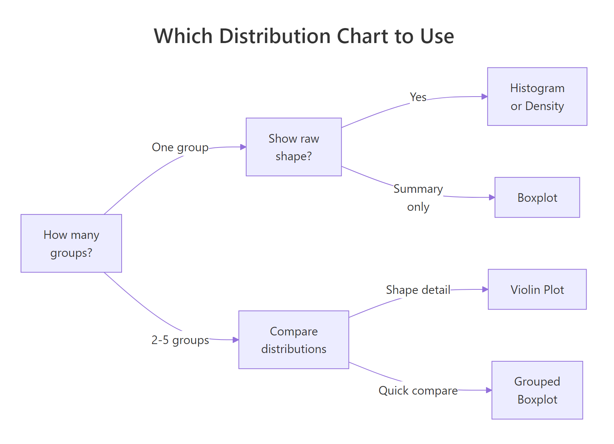
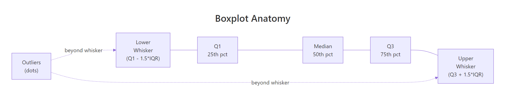

ggplot2 Distribution Charts: Histograms, Density, Boxplots, When to Use Each
Distribution charts show how your data is spread, where values cluster, thin out, and whether outliers exist. ggplot2 provides four main types: geom_histogram(), geom_density(), geom_boxplot(), and geom_violin().
Introduction
Before you run a single statistical test, you should look at your data's distribution. Is it symmetric or skewed? Does it have one peak or two? Are there outliers pulling the mean away from the median? These questions all have visual answers, and ggplot2 gives you four powerful tools to find them.
The tricky part is picking the right one. Each chart type reveals different aspects of a distribution, and each can mislead you if used carelessly. A histogram hides its shape behind arbitrary bin choices. A boxplot compresses everything into five numbers, missing bimodality entirely. A density plot smooths away sharp features. Understanding the trade-offs is what separates exploratory analysis done well from analysis done fast.
In this tutorial you'll work with a consistent dataset throughout, building each chart type progressively. All four charts share the same WebR session, so variables from earlier blocks are available in later ones. By the end you'll have a practical decision framework, know how to tune the key parameters, and understand exactly when each chart type can mislead you.

Figure 1: Decision guide, which distribution chart fits your situation.
ggridges) in the Further Reading section. For scatter plots that reveal bivariate distributions, see the ggplot2 Scatter Plots tutorial.What Does geom_histogram() Show, and How Do You Choose binwidth?
A histogram splits your variable into equal-width bins and counts how many observations fall into each. The height of each bar shows frequency (or density if you set y = after_stat(density)). It's the most direct way to see shape: unimodal vs bimodal, symmetric vs skewed, light vs heavy tails.
The catch is that the shape you see depends entirely on binwidth. Too wide and you lose structure; too narrow and noise dominates. There's no universally correct answer, you need to try a few values.
Let's start by loading ggplot2 and creating a focused subset of the built-in diamonds dataset. We'll use price for most examples, and cut for grouping.
Now let's build a histogram and experiment with binwidth. Pay attention to how the story changes.
The right-skewed distribution is clear: most diamonds are priced under $3,000, with a long tail of expensive stones. The spike near $5,000 is a real feature, it shows up with binwidth = 200 too. With binwidth = 5,000 it disappears into noise.
bins = 30 (ggplot2's default) and adjust. If the histogram looks jagged, double the binwidth. If it looks like a single blob, halve it. The goal is to reveal structure without manufacturing noise.Try it: Change binwidth to 500 and then 2000 in the histogram above. At which value does the spike around $5,000 first disappear?
Click to reveal solution
Explanation: The spike around $5,000 is a real feature of diamond pricing. At binwidth = 500 it's still visible; at binwidth = 2000 the bar spans $4,000–$6,000 and merges it into the surrounding bars.
What Does geom_density() Show, and What Does adjust Control?
A density plot is a smoothed version of a histogram. Instead of counting observations in bins, it estimates the underlying probability density function using a kernel (usually Gaussian). The result is a continuous curve that shows relative likelihood at each value.
The key parameter is adjust, which scales the automatic bandwidth. adjust = 1 (default) is the standard Silverman bandwidth. adjust = 0.5 gives a tighter fit; adjust = 2 gives a smoother curve. Unlike binwidth, there's no "frequency" on the y-axis, values represent density, not count.
The default curve (adjust = 1) reveals the right skew and the slight shoulder around $5,000. The tighter curve (adjust = 0.5) shows that shoulder more clearly as a distinct bump. If your data is truly multimodal, a lower adjust can reveal the modes that a default density plot smooths away.
Now here's a powerful combination: overlay the density curve on a histogram to get both exact counts and the smoothed shape. The trick is to use y = after_stat(density) on the histogram so both layers share the same y-scale.
The overlay is ideal for reports: it gives readers the raw data feel of a histogram with the smooth shape of a density curve.
Try it: Change adjust to 0.25 in geom_density(). How many peaks appear in the price distribution?
Click to reveal solution
Explanation: At adjust = 0.25, you see 5–10+ peaks. Most are noise artefacts caused by oversmoothing in reverse (undersmoothing). The main lesson: very low adjust values pick up random variation as if it were structure.
How Do Boxplots Summarise a Distribution, and When Do They Mislead?
A boxplot compresses your entire distribution into five numbers: minimum (or lower whisker), first quartile (Q1), median, third quartile (Q3), and maximum (or upper whisker). Points beyond the whiskers are plotted individually as outliers.

Figure 2: Anatomy of a boxplot, the five summary statistics and how outliers are identified.
Boxplots excel at comparing multiple groups side by side. The box covers the interquartile range (IQR = Q3 − Q1), which contains the middle 50% of your data. The whiskers extend to 1.5× IQR. Any point beyond that is an outlier.
Notice something counterintuitive: Fair cut diamonds appear to have a higher median price than Ideal cut. This is actually a real phenomenon driven by confounding, Fair cut diamonds tend to be larger (more carats), which drives price up. Boxplots surface this kind of puzzle quickly.
Try it: Replace cut with color in the boxplot above. Which color grade has the highest median price?
Click to reveal solution
Explanation: Color J (worst grade) tends to have the highest median price, again driven by carat size. This counterintuitive pattern illustrates why boxplots are great for surfacing anomalies that demand further investigation.
When Should You Use geom_violin() Over a Boxplot?
A violin plot is a boxplot that grew a density plot on each side. Where a boxplot shows you five numbers, a violin shows you the full shape of the distribution. Thick parts of the violin have many observations; thin parts have few. You can embed a boxplot inside a violin to get both the shape detail and the summary statistics.
Violins are ideal when you have at least 100 observations per group and you suspect or want to reveal multimodality. They can be misleading with very small groups because the kernel density estimate implies a smooth shape that the data doesn't actually support.
The violin reveals something the boxplot hides: several cut categories have a bimodal distribution, a peak of low-priced small diamonds and a peak of higher-priced larger ones. The boxplot would show the same median and IQR for a bimodal and unimodal distribution. The violin doesn't let that slide.
Try it: Add scale_y_log10() to the violin plot above to handle the extreme right skew. Does the bimodal shape become clearer or less clear on a log scale?
Click to reveal solution
Explanation: Log scale compresses the right tail and stretches the left, making the bimodal structure even more visible. For right-skewed price/income data, log scale almost always reveals more structure than the raw scale.
Common Mistakes and How to Fix Them
Mistake 1: Forgetting that geom_histogram() default bins may hide structure
❌ Wrong:
Why it's wrong: The default 30 bins may be too coarse for your data range. The warning is ggplot2's way of telling you to think about this, but many users ignore it.
✅ Correct:
Mistake 2: Using density plots on small samples
❌ Wrong: Using geom_density() on a dataset with n = 40, presenting the smooth curve as if it were reliable.
Why it's wrong: With small samples, the kernel density estimate is highly sensitive to individual data points. The curve implies smooth structure that isn't there.
✅ Correct: Use geom_histogram() for n < 200. If you must use density, add a rug plot (geom_rug()) to show where the actual data points are:
Mistake 3: Comparing distributions across groups with separate histograms
❌ Wrong: Making four separate geom_histogram() plots, one per group, and eyeballing the comparison.
✅ Correct: Use facet_wrap() with free y-scales if counts differ, or use geom_density() with fill = group, alpha = 0.3 for overlapping densities:
Mistake 4: Using colour instead of fill for filled geoms
❌ Wrong:
Why it's wrong: colour controls the bar border; fill controls the interior. The result is a histogram with coloured outlines but grey fills.
✅ Correct:
Mistake 5: Forgetting theme(legend.position = "none") on grouped plots
When fill = cut is set, ggplot2 adds a legend by default. For grouped boxplots and violins where the x-axis already shows the group names, the legend duplicates information.
✅ Always add theme(legend.position = "none") when your x-axis already labels the groups.
Practice Exercises
Exercise 1: Distribution Audit
You're given the airquality dataset. Create three plots for the Ozone variable: a histogram (binwidth = 10), a density plot (adjust = 0.8), and a boxplot. Arrange them using patchwork or display them individually. Describe in a comment what shape the distribution has.
Click to reveal solution
Explanation: All three charts agree: Ozone is right-skewed. The density plot shows a single mode; the boxplot reveals many outliers above the upper whisker. The histogram is the most honest representation given the moderate sample size (n ≈ 111).
Exercise 2: Violin vs Boxplot Comparison
Using airquality, compare the Temp variable across months (convert Month to a factor). Create a side-by-side comparison: a grouped boxplot on the left and a violin + boxplot on the right. Which months have the most symmetric distributions?
Click to reveal solution
Explanation: The violin plot reveals what the boxplot can't: July has a relatively uniform distribution across its temperature range, while May shows a distinct concentration at lower temperatures. The shapes are invisible in the boxplot alone.
Putting It All Together
Let's build a complete distribution analysis of the mpg dataset, working through all four chart types in a coherent narrative. We'll look at city fuel efficiency (cty) across vehicle classes.
The two-panel progression tells a coherent story: the histogram reveals bimodality (a cluster of fuel-efficient small cars and a cluster of gas-heavy trucks/SUVs). The density confirms it. The grouped boxplot shows which classes drive each cluster. The violin adds shape detail, revealing that compacts have the widest spread of fuel efficiency within their class.
Summary
| Chart Type | Best For | Key Parameter | Misleads When |
|---|---|---|---|
geom_histogram() |
Single variable, raw data feel | binwidth |
Binwidth chosen poorly |
geom_density() |
Smooth shape, large samples | adjust |
Small samples (n < 200) |
geom_boxplot() |
Comparing groups, quick summary | width, outlier.* |
Data is bimodal |
geom_violin() |
Comparing groups + shape detail | adjust, trim |
Very small groups |
Quick decision guide:
- One variable, see exact counts → histogram
- One variable, see smooth shape (n > 200) → density
- Compare 2+ groups, care about median/IQR → boxplot
- Compare 2+ groups, care about shape → violin (+ embedded boxplot)
- Combine all → overlay histogram + density, or use patchwork
FAQ
Which is better, histogram or density plot?
For small samples (n < 200), histogram is more honest, it shows exactly where data points are. For large samples, density plots reveal smooth shape better. Overlay both for the best of both worlds using y = after_stat(density) on the histogram.
How do I put multiple density curves on one plot?
Map a grouping variable to fill or colour and set alpha = 0.3 so overlapping areas are visible: geom_density(aes(fill = group), alpha = 0.3). More than 4-5 groups gets cluttered, consider ridgeline plots instead.
What does trim = FALSE do in geom_violin()?
By default (trim = TRUE), violins are cut at the min and max of the data, giving flat ends. trim = FALSE extends the density estimate beyond the data range, giving rounded tails. Use FALSE when you want to emphasise the tail behaviour.
Why does my boxplot have so many outlier dots?
Outliers are points beyond 1.5× IQR from the quartiles. For skewed distributions (like price or income), the upper whisker is very short and almost everything in the tail shows as an outlier. This isn't wrong, it's telling you the distribution is heavy-tailed. Consider a log transform.
Can I use geom_boxplot() for a single variable (no groups)?
Yes: ggplot(df, aes(y = variable)) + geom_boxplot(). The x-axis is meaningless so add theme(axis.text.x = element_blank(), axis.ticks.x = element_blank()) to clean it up.
References
- Wickham, H., ggplot2: Elegant Graphics for Data Analysis, 3rd Edition. Springer (2016). Link
- ggplot2 documentation,
geom_histogram(). Link - ggplot2 documentation,
geom_density(). Link - ggplot2 documentation,
geom_boxplot(). Link - ggplot2 documentation,
geom_violin(). Link - R Graph Gallery, "Violin and Boxplot" section. Link
- Wilke, C.O., Fundamentals of Data Visualization. O'Reilly (2019). Chapter 7: Visualizing Distributions. Link
Continue Learning
- ggplot2 Scatter Plots, Move from single-variable distributions to bivariate relationships with
geom_point(). - ggplot2 Violin Plot, Deep dive into
geom_violin(): embedded jitter, quantile lines, and split violins for paired data. - ggplot2 Ridgeline Plot, Compare distributions across many groups at once with the
ggridgespackage.